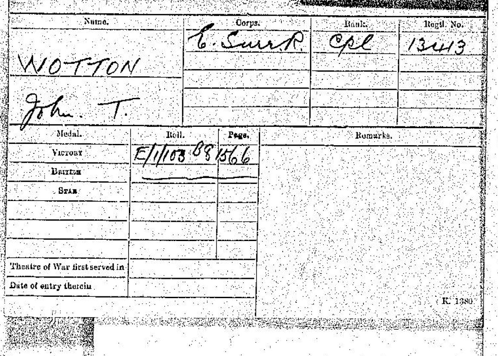
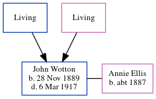

John Thomas Wotton 1889 - 1917
[ Home ] | [ Calendar ] | [ Surnames Index ] | [ Errors ] | [ Family History ]The child of Thomas Wotton and Mary Mount, John Wotton, the first cousin twice-removed on the mother's side of Nigel Horne, was born in Herne Bay, Kent, England on 28 Nov 18891,2,3 and baptised there at Christ Church on 23 Feb 1890. He married Annie Ellis at St Andrew, Stockwell Green, London, England on 31 Aug 19136.
During his life, he was living in Herne, Kent, England in 18911; and in Clapham, London, England in 19012. In 1917 he was serving in the military in France (regiment: East Surrey Regiment; Rank: Corporal; Service number: 13413).
He died on 6 Mar 1917 in Somme, Hauts-de-France, France4,5 and was buried at Abbeville Communal Cemetery Extension, Abbeville, Hauts-de-France in 1917.
Parents
- Thomas
- Mary A
Citations
- 1891 England Census Online publication - Provo, UT, USA: The Generations Network, Inc., 2005.Original data - Census Returns of England and Wales, 1891. Kew, Surrey, England: The National Archives of the UK (TNA): Public Record Office (PRO), 1891. Data imaged from The National (Relation to Head of House: Son)
- 1901 England Census Online publication - Provo, UT, USA: The Generations Network, Inc., 2005.Original data - Census Returns of England and Wales, 1901. Kew, Surrey, England: The National Archives of the UK (TNA): Public Record Office (PRO), 1901. Data imaged from the National (Relation to Head of House: Son)
- England & Wales, FreeBMD Birth Index, 1837-1915 Online publication - Provo, UT, USA: The Generations Network, Inc., 2006.Original data - General Register Office. England and Wales Civil Registration Indexes. London, England: General Register Office. © Crown copyright. Published by permission of the Cont
- Commonwealth War Graves Commission Debt Of Honour - Findmypast
- Find A Grave http://www.findagrave.com
- England & Wales Marriages 1837-2005 - Findmypast
Media
John Thomas Wotton - WW1 Record

England & Wales births 1837-2006 - BMD/B/1889/4/AZ/000624/278
England & Wales marriages 1837-2008 - BMD/M/1913/3/AZ/001389/098
Commonwealth War Graves Commission Debt Of Honour - GBM/CWGC/ROLLOFHONOUR/001059538
England Births & Baptisms 1538-1975 - R_884301632
Kent Baptisms - GBPRS/CANT/B/96678267
Britain, Campaign, Gallantry & Long Service Medals & Awards - GBM/MCI/4892194
Family Tree
Map
Generated by ged2site. Last updated on Jul 3, 2024
Known Issues
Burial date (1917) has no citations
May have been living with mother on 1891, but the addresses don't match or aren't detailed enough to be sure
May have been living with father on 1891, but the addresses don't match or aren't detailed enough to be sure
May have been living with mother on 1901, but the addresses don't match or aren't detailed enough to be sure
May have been living with father on 1901, but the addresses don't match or aren't detailed enough to be sure